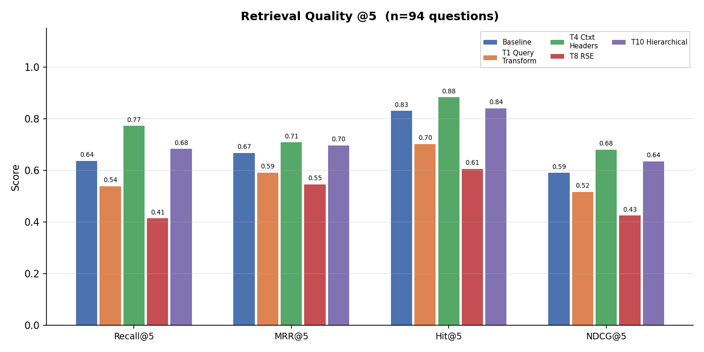
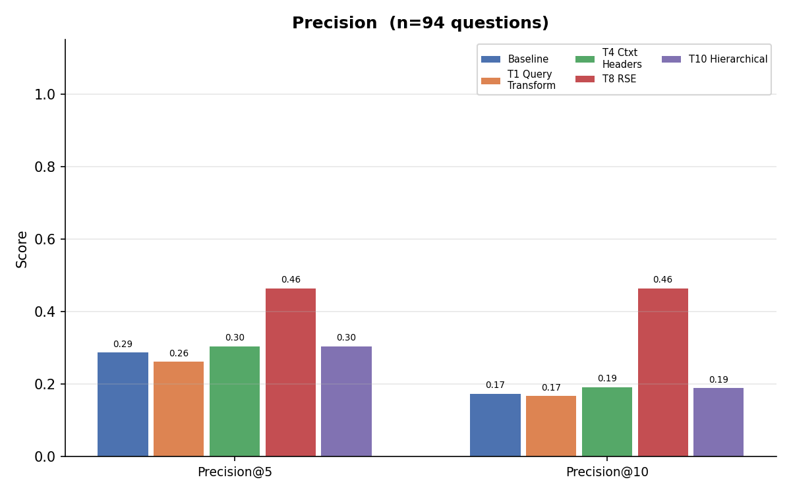
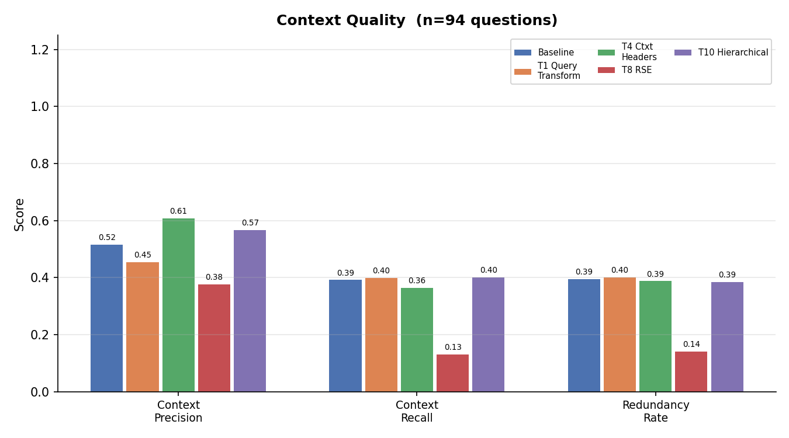
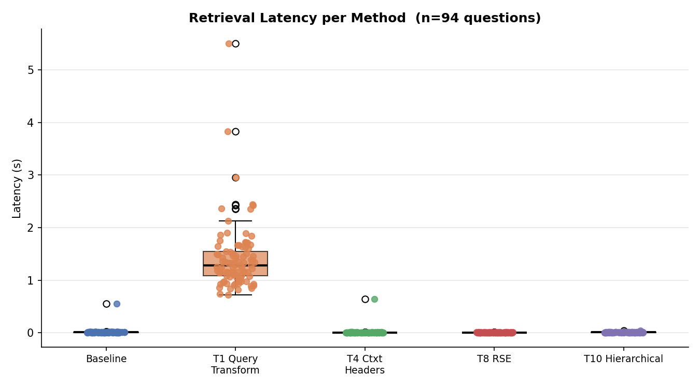
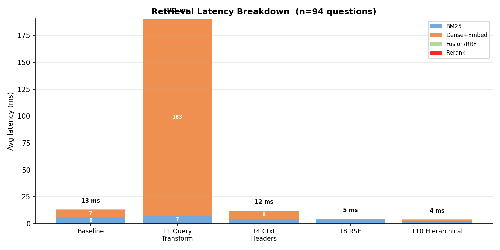

Hệ thống RAG Agent Tiếng Việt
Kiến trúc hỏi đáp tài liệu học thuật với kiểm soát suy luận và trích xuất công thức toán từ PDF
Mục tiêu
Cho phép người dùng nạp tài liệu tiếng Việt (PDF, URL, văn bản) và đặt câu hỏi bằng tiếng Việt. Hệ thống trả lời chính xác, trích dẫn nguồn, giữ nguyên công thức toán học.
Điểm khác biệt
- Controllable Agent Graph: 10 node kiểm soát, replanning loop, verify groundedness 2 lần
- Math-aware PDF Parsing: Font remap, fraction reconstruction, geometric space rebuild
- Section-aware Chunking: Giữ nguyên công thức, không cắt ngang section
Tech Stack Snapshot
| Lớp | Công nghệ | Vai trò |
|---|---|---|
| Frontend | React 18 + TypeScript + Vite | Chat UI, SSE streaming, citation popups, AgentGraph SVG real-time |
| Backend API | FastAPI + Uvicorn | REST endpoints, async SSE streaming, rate limiting (SlowAPI) |
| Database | SQLite (WAL mode) | Documents, chunks, embeddings BLOB, sessions, messages, summaries |
| Embedding | OpenAI text-embedding-3-small | 1536-dim, L2 normalized, disk cache SHA-256 |
| Dense Retrieval | Turbovec (TurboQuant 4-bit) | Exhaustive SIMD scan, 8× compression, no training |
| Sparse Retrieval | BM25Okapi (rank_bm25) | Vietnamese tokenized, lazy rebuild |
| Hybrid Fusion | Reciprocal Rank Fusion (RRF) | Rank-space consensus, k=60 |
| Reranker | BAAI/bge-reranker-v2-m3 | Cross-encoder, FP16, local inference |
| LLM | OpenAI gpt-4o-mini | Fast mode (router/planner/verify) + Strong mode (answer/synthesize) |
| Deployment | Docker Compose | CPU-only, air-gapped capable |
Kiến trúc Tổng quan
Tính năng chính
- 3 nguồn đầu vào: PDF upload, URL, văn bản thuần
- 3 parser: PyMuPDF (local, free), VLM fallback (OpenAI vision), Reducto (premium API)
- Dual-model strategy: gpt-4o-mini cho mọi node; phân biệt fast (router/planner/distill/verify/sufficiency/replan) và strong (answer/synthesize)
- Real-time streaming: SSE events gồm thinking, route, plan, retrieved, token, final, error
- Conversation memory: Tóm tắt khi >12 messages, giữ 4 message gần nhất trong prompt
Ràng buộc thiết kế
- Privacy-first: Không upload data lên vector DB cloud; turbovec chạy local
- CPU-only: Docker image không CUDA; PyTorch CPU wheel
- Air-gapped capable: Sau khi index built, không cần internet (trừ khi cần LLM call)
- Vietnamese-native: Tất cả prompts bằng tiếng Việt; underthesea tokenization
Luồng Người dùng từ Đầu đến Cuối
SSE Events (Event Lifecycle Pipeline)
thinking (UX Loading)route (Intent Classification)plan (Sub-query Generation)retrieved (Context Preview)token (Inference Streaming)final (End-of-Stream)Chi tiết tương tác
- Upload: Người dùng kéo thả PDF hoặc paste URL, giới hạn MAX_UPLOAD_SIZE=5MB.
- Processing: Backend spawn background thread. Frontend poll /api/documents để check status processing → ready.
- Chat: Mỗi session là một UUID. Fetch 6 messages từ DB, giữ 4 message gần nhất trong prompt. Nếu > SUMMARY_THRESHOLD=12 messages, hệ thống tự tóm tắt conversation.
- Answer: Câu trả lời streaming token-by-token qua SSE. Citation badges [1] [2] clickable → popup hiển thị text gốc + page + section.
PDF Parsing: Tại sao đọc PDF lại khó?
PDF không phải file văn bản thông thường
PDF được thiết kế để hiển thị giống nhau trên mọi máy, không phải để trích xuất nội dung. Nó lưu từng ký tự ở tọa độ cụ thể trên trang, không lưu cấu trúc như "đoạn văn", "tiêu đề", hay "bảng".
Giống như bạn có một bức ảnh chụp trang sách — bạn thấy được chữ, nhưng không biết đâu là tiêu đề, đâu là nội dung, đâu là chú thích.
5 vấn đề thường gặp
- Ký hiệu toán học bị sai: ∑, √, ∏ trong PDF được lưu dưới dạng "hình vẽ" từ font đặc biệt. Khi đọc ra thành ký tự ASCII thường (X, q) — mất nghĩa.
- Mất khoảng trắng: Font tiếng Việt cũ (VNI, .VnTime) không có ký tự "space" trong bảng mã. Kết quả: "CôngtyABC" thay vì "Công ty ABC".
- Phân số mất cấu trúc: Đường gạch ngang phân số là "hình vẽ", không phải text. Kết quả: "a + b c + d" thay vì "(a+b)/(c+d)".
- PDF scan: Trang PDF là ảnh chụp (không có text layer) → không đọc được gì.
- Header/footer lặp: Số trang, tên trường lặp lại mỗi trang → gây nhiễu khi search.
3 cách xử lý (fallback chain)
| Cách | Khi nào dùng | Chi phí |
|---|---|---|
| PyMuPDF (local) | Mặc định — đọc trực tiếp từ file PDF | Miễn phí |
| VLM (AI nhìn ảnh) | Trang trống hoặc không đọc được → dùng AI vision đọc ảnh trang đó | Trả phí theo token |
| Reducto API | Người dùng bật chế độ cao cấp — API chuyên parse PDF học thuật | 1-2 credits/trang |
Chiến lược: Thử PyMuPDF trước (free). Nếu trang nào không đọc được → fallback sang VLM. Nếu người dùng muốn chất lượng cao nhất → dùng Reducto API.
Font Remap: Sửa ký hiệu toán học bị lỗi
Vấn đề: Ký hiệu toán học trong PDF bị sai
Khi bạn viết LaTeX $\sum$ và compile thành PDF, ký hiệu ∑ không được lưu dưới dạng Unicode "∑". Thay vào đó, PDF dùng font toán học đặc biệt (tên CMEX10) và lưu ∑ dưới dạng glyph ID — một con số nội bộ.
Khi đọc PDF bằng tool thông thường, glyph ID này được decode thành ký tự ASCII ngẫu nhiên — ∑ thành X, √ thành q, ∏ thành Y. Hoàn toàn mất nghĩa.
Giải pháp: Nhận diện font và remap
- PyMuPDF đọc từng ký tự kèm tên font: {char: 'X', font: 'CMEX10+C0'}
- Detect font name chứa "CMEX" → đây là font toán học LaTeX
- Tra bảng remap: font CMEX10, glyph 'X' → '∑'
- Thay thế: văn bản giờ chứa ∑ thay vì X
Prose text (Arial, Times) không bị ảnh hưởng — chỉ remap font toán học.
Bảng remap
| Ký tự trong PDF | Remap thành | Ý nghĩa |
|---|---|---|
| X | ∑ | Tổng (summation) |
| q | √ | Căn bậc hai |
| Y | ∏ | Tích (product) |
| Z | ∫ | Tích phân (integral) |
Tại sao việc này quan trọng?
| Tiêu chí | Không remap | Có remap |
|---|---|---|
| Đọc hiểu | "X_{i=1}^n q(a_i)" — vô nghĩa | "∑_{i=1}^n √(a_i)" — đúng công thức |
| BM25 search | Query "tổng" không match "X" | Query "tổng" match ∑ trong context |
| Embedding | Vector embedding của "X q Y" bị nhiễu | Vector embedding của "∑ √ ∏" chính xác |
| LaTeX render | Broken: $X$ thay vì $\sum$ | Đúng: $\sum$ |
File: pdf_extract.py — _remap_char() + _is_math_font() | Deterministic, zero LLM cost.
Phân số trong PDF: Khôi phục cấu trúc bị mất
Vấn đề: Phân số trong PDF không phải là text
Khi bạn viết \frac{a+b}{c+d} trong LaTeX, kết quả trong PDF là hình vẽ: một đường ngang (gạch phân số) với tử số ở trên và mẫu số ở dưới. Đường gạch này không phải ký tự text — nó là vector graphics.
Khi đọc PDF bằng tool thông thường, nó chỉ thấy: a + b rồi c + d — không biết đây là phân số. Kết quả: "a + b c + d" — vô nghĩa.
Giải pháp: Tìm đường gạch phân số trong "hình vẽ"
- PDF lưu cả text lẫn hình vẽ (drawings). Quét tất cả drawings trên trang.
- Tìm các đường ngang: đường thẳng có độ dốc gần bằng 0, chiều dài từ 14px đến 60% trang.
- Với mỗi đường ngang: tìm chữ nằm ngay trên nó (tử số) và ngay dưới nó (mẫu số).
- Kiểm tra hợp lệ: khoảng cách giữa tử và mẫu ≥ 6px (không phải chữ bình thường).
- Ghép lại: (a+b)/(c+d)
Ví dụ trực quan
| Không reconstruct | Có reconstruct |
|---|---|
| a + b c + d | (a+b)/(c+d) |
| Mất dấu gạch → không biết phân số | Giữ nguyên cấu trúc phân số |
| LaTeX render: sai | LaTeX render: đúng $\frac{a+b}{c+d}$ |
| Agent không trích dẫn đúng công thức | Agent trích dẫn chính xác [1] |
File: pdf_extract.py — _fraction_bars() + _build_fractions()
Geometric Space Rebuild: Thêm khoảng trắng bị mất
Vấn đề: Font tiếng Việt cũ không có ký tự "space"
Các font tiếng Việt cũ như VNI, .VnTime không có ký tự khoảng trắng (space) trong bảng mã. Khi tạo PDF, chương trình không emit ký tự space — thay vào đó, nó đặt các chữ cách xa nhau về mặt tọa độ.
Tool đọc PDF thông thường chỉ đọc từng ký tự theo thứ tự, không quan tâm đến khoảng cách → "CôngtyABC" thay vì "Công ty ABC".
Giải pháp: Đo khoảng cách giữa các chữ
- Đọc tất cả ký tự trên trang kèm tọa độ: mỗi chữ có vị trí (x0, y0, x1, y1).
- Tính khoảng cách trung bình giữa các chữ trong trang (median space width).
- Sắp xếp các chữ theo thứ tự từ trái sang phải.
- Với mỗi cặp chữ liên tiếp: đo gap = khoảng cách giữa chúng.
- Nếu gap lớn hơn 60% khoảng cách trung bình → thêm space vào giữa.
- Kết quả: "Công ty ABC"
Tại sao việc này quan trọng?
| Tiêu chí | Không rebuild | Có rebuild |
|---|---|---|
| Text đọc được | "CôngtyABC" | "Công ty ABC" |
| Tokenize (Underthesea) | ["Côngty", "ABC"] — sai từ | ["Công ty", "ABC"] — đúng |
| BM25 search | Query "công ty" không tìm thấy | Tìm thấy chính xác |
| Embedding | Vector bị nhiễu do từ sai | Vector đúng ngữ nghĩa |
File: pdf_extract.py — _join_line() | Không cần OCR, không cần font database — chỉ dùng geometry, hoàn toàn deterministic.
Heading Detection & Boilerplate Removal: Dọn dẹp PDF trước khi index
Tại sao cần phát hiện heading?
Heading (tiêu đề chương, mục) là mốc quan trọng trong tài liệu. Nếu biết được heading, hệ thống có thể:
- Gán mỗi đoạn text vào đúng mục của nó → khi search, biết kết quả thuộc chương nào.
- Thêm heading vào chunk dưới dạng "header ngữ cảnh": "Đề thi Toán › Chương 3 › Tích phân" → giúp BM25 và embedding hiểu rõ chunk này nói về gì.
- Hiển thị citation popup: người dùng biết đoạn trích dẫn thuộc mục nào, trang nào.
Cách phát hiện heading (4 loại)
| Loại | Dấu hiệu | Ví dụ |
|---|---|---|
| Đánh số | Bắt đầu bằng số: 1., 1.2, 3.1.4 | "1.2 Giới thiệu" |
| Số La Mã | Bắt đầu bằng I, II, III, IV... | "I. Mở đầu" |
| Bước | Bắt đầu bằng "Bước" | "Bước 4: Tính toán" |
| Từ khóa | Mục lục, Phụ lục, Tài liệu tham khảo | "Mục lục" |
Heading hợp lệ: chữ lớn hơn bình thường (≥ 1.15×), ngắn (≤ 80 ký tự), không chứa ký hiệu toán (tránh nhầm công thức là heading).
Boilerplate Removal: Loại phần lặp lại
Mỗi trang PDF thường có header, footer, số trang lặp lại. Nếu không loại bỏ, chúng sẽ gây nhiễu khi search.
Cách phát hiện: Line nào xuất hiện trên ≥ 50% số trang và ngắn (≤ 60 ký tự) → boilerplate → loại.
Ví dụ: "Trang 5", "Đại học Bách Khoa" lặp lại mọi trang → bị xóa trước khi index.
File: pdf_extract.py — _heading_label(), _split_sections(), _boilerplate_lines() | Heuristic, đủ tốt cho 95% tài liệu học thuật Việt Nam.
VLM Fallback: Dùng AI vision để đọc PDF scan
Vấn đề: PDF scan không có text layer
PyMuPDF chỉ đọc được text từ PDF sinh ra từ máy tính (born-digital) — tức là PDF có text layer sẵn. Nhưng nhiều tài liệu là file scan (chụp ảnh giấy) — không có text layer, PyMuPDF trả về rỗng.
Giải pháp: Dùng AI có khả năng nhìn ảnh và đọc chữ (Vision Language Model) — giống như OCR nhưng thông minh hơn, đọc được cả công thức toán và bảng biểu.
Cách hoạt động
- Thử PyMuPDF trước. Nếu trang nào đọc được ít hơn 3 ký tự → đánh dấu "empty".
- Chụp ảnh trang đó thành PNG (độ phân giải 200 DPI).
- Kiểm tra cache: trang này đã từng xử lý chưa? (dùng SHA-256 để tạo key duy nhất)
- Nếu chưa có cache → gửi ảnh cho GPT-4o-mini vision với prompt: "Chuyển ảnh trang tài liệu thành Markdown, công thức toán = LaTeX"
- Nhận kết quả Markdown → lưu cache → dùng tiếp.
So sánh
| Tiêu chí | PyMuPDF | + VLM fallback |
|---|---|---|
| PDF scan | Hoàn toàn fail (rỗng) | Đọc được toàn bộ |
| Chữ viết tay | Fail | Có thể nhận diện |
| Bảng phức tạp | Rời rạc, mất cấu trúc | Markdown table đúng format |
| Chi phí | Miễn phí | ~3.500đ/trang (gpt-4o-mini) |
| Tốc độ | ~100ms/trang | ~2-5s/trang (gọi API) |
Chế độ: auto = chỉ dùng VLM cho trang empty (tiết kiệm). on = dùng VLM cho mọi trang (PDF scan 100%).
File: pdf_vlm.py | Config: VLM_PARSE=off|auto|on
Reducto: PDF Parser cao cấp (optional)
Reducto là gì?
Reducto là một dịch vụ API chuyên parse PDF — đặc biệt giỏi với tài liệu phức tạp: bảng biểu, công thức toán, phân cấp chương mục, ảnh nhúng. Khác với PyMuPDF (dùng heuristic — quy tắc cứng), Reducto dùng AI model + layout analysis nên chất lượng cao hơn.
Điểm đặc biệt: Reducto trả về embed_text — một bản tóm tắt được tối ưu cho embedding, giúp search chính xác hơn so với raw text.
2 chế độ
| Chế độ | Khác biệt | Chi phí |
|---|---|---|
| default | Tự động review bảng biểu | ~250đ/trang |
| agentic | Dùng AI review cả text lẫn bảng | ~500đ/trang |
So sánh với PyMuPDF
| Tiêu chí | PyMuPDF | Reducto |
|---|---|---|
| Chi phí | Miễn phí | 250-500đ/trang |
| Chất lượng | Tốt cho PDF LaTeX | Cao hơn cho scan/layout phức tạp |
| Bảng biểu | Rời rạc, mất cấu trúc | Markdown/HTML đúng format |
| Phụ thuộc | Open source, không phụ thuộc | Có API key mới dùng được |
Quan trọng: Reducto là optional. Hệ thống chạy 100% free nếu không bật.
File: reducto_parser.py | Config: REDUCTO_PARSE=off|default|agentic
Underthesea: Tách từ tiếng Việt đúng cách
Vấn đề: Tiếng Việt không tách từ bằng khoảng trắng
Tiếng Anh: "New York" → 2 từ, tách bằng space là đúng. Tiếng Việt: "Công ty" là 1 từ ghép, nếu tách thành "Công" và "ty" → mất nghĩa. Tương tự: "trụ sở", "hàm số", "phương trình".
Nếu tách sai từ → BM25 search không match, embedding bị nhiễu.
Underthesea giải quyết thế nào?
Underthesea là thư viện tách từ tiếng Việt dùng AI (CRF/BiLSTM) đã được train trên corpus tiếng Việt. Nó biết "Công ty" là 1 từ, "trụ sở" là 1 từ — dựa trên ngữ cảnh xung quanh.
| Bước | Input | Output |
|---|---|---|
| 1. Tách từ | "Công ty ABC" | ["Công ty", "ABC"] |
| 2. Viết thường | ["Công ty", "ABC"] | ["công ty", "abc"] |
| 3. Lọc từ dừng | ["và", "của", "công ty"] | ["công ty"] |
| 4. Tách compound | "compute_loss" | ["compute_loss", "compute", "loss"] |
Tại sao tách compound?
Code variable compute_loss có thể được viết trong query là "compute loss" (có space). Nếu chỉ lưu "compute_loss" → không match. Nên hệ thống lưu cả 3 biến thể: compute_loss, compute, loss → match được cả 2 cách viết.
| Tiêu chí | Tách bằng space | Underthesea |
|---|---|---|
| "Công ty" → | ["Công", "ty"] | ["Công ty"] |
| "trụ sở" → | ["trụ", "sở"] | ["trụ sở"] |
| BM25 match | Query "trụ sở" không tìm thấy | Tìm thấy chính xác |
File: vn_text.py | Cache 4096 entries | 40+ từ dừng tiếng Việt
Chunking: Tại sao phải chia nhỏ tài liệu?
Vấn đề: Không thể embed cả tài liệu dài vào 1 vector
Imagine bạn có 1 cuốn sách 200 trang và muốn tóm tắt nó thành 1 câu duy nhất. Câu đó sẽ rất mơ hồ — không đại diện cho nội dung nào cụ thể. Tương tự, embedding model tạo 1 vector cho toàn bộ document → vector đó là "trung bình" của quá nhiều chủ đề → khi search, khó tìm đúng đoạn cần thiết.
4 lý do cần chunking
- Giới hạn model: Embedding model chỉ nhận tối đa ~8000 tokens. Document dài hơn bị cắt cụt → mất thông tin.
- Vector bị loãng: Embed cả chương 20 trang → vector là "trung bình" của quá nhiều chủ đề → query khó retrieve đúng đoạn.
- LLM bỏ sót: Khi đưa context quá dài cho LLM, thông tin ở giữa thường bị bỏ qua ("lost in the middle").
- Chi phí: Token count tỉ lệ với độ dài → chunk nhỏ = ít token = rẻ hơn.
Nguyên tắc chunk đúng
"Nếu chunk tự nó có nghĩa với người đọc, thì cũng có nghĩa với model"
- Đủ lớn để chứa 1 ý hoàn chỉnh
- Đủ nhỏ để tập trung vào 1 chủ đề
- Không cắt ngang công thức, bảng, đoạn văn liên quan
- Giữ overlap giữa chunks liên tiếp để không mất context ở ranh giới
3 lớp chunking của dự án
| Lớp | Tên | Làm gì |
|---|---|---|
| 1 | Structural Split | Phân biệt văn bản thường vs "atomic" (công thức, bảng). Atomic không bao giờ bị cắt. |
| 2 | Sentence Segmentation | Tách văn bản thành câu. Bảo vệ viết tắt như "U.S." khỏi bị tách sai. |
| 3 | Smart Packing | Gom câu vào chunk ≤ 1000 ký tự. Giữ overlap 200 ký tự giữa 2 chunks liên tiếp. |
Structural Split: Không cắt ngang công thức toán
Vấn đề: Công thức toán không thể bị cắt đôi
Trong tài liệu học thuật, công thức toán là đơn vị không thể tách rời. Nếu cắt ngang công thức S(c) = C1·(24−Nobs(c))/24, chunk sẽ chứa (1−C1)·dmin... — vô nghĩa khi đứng một mình. Tương tự, bảng Markdown cắt ngang sẽ mất header, không còn hiểu được cột nào là gì.
Giải pháp: Phát hiện "atomic lines"
- Duyệt từng dòng trong block text.
- Dòng nào chứa ký hiệu toán (∑, √, ∏, ∫, ≤, ≥, ≠, →, ±, ×, ÷...) hoặc $ (LaTeX) hoặc | (bảng Markdown) → đánh dấu atomic.
- Atomic lines không bao giờ bị cắt — luôn giữ nguyên trong 1 chunk.
- Văn bản thường (prose) được gom vào chunks ≤ 1000 ký tự bình thường.
So sánh
| Tiêu chí | Chunking thường | Structural Split |
|---|---|---|
| Công thức toán | Cắt ngang → vô nghĩa | Giữ nguyên |
| Bảng Markdown | Cắt ngang → mất header | Giữ nguyên bảng |
| Section context | Có thể cắt ngang section | Không cross section boundary |
File: chunker.py — _split_units(), _is_atomic_line()
Sentence Segmentation & Smart Packing: Gom câu vào chunk
Tách câu tiếng Việt (Layer 2)
Sau khi đã có block text (không chứa công thức), cần tách thành câu để gom vào chunk. Tiếng Việt dùng dấu . ? ! ; để kết thúc câu — nhưng có trường hợp đặc biệt:
- Viết tắt: "U.S.", "e.g." — dấu . không phải kết thúc câu. Giải pháp: tạm thay ". " bằng ký tự đặc biệt → tách câu → khôi phục lại.
- Dấu chấm + chữ hoa: ". " theo sau bởi chữ hoa hoặc chữ tiếng Việt → khả năng cao là câu mới.
Gom câu vào chunk (Layer 3)
- Tạo chunk rỗng.
- Thêm câu vào chunk cho đến khi đạt 1000 ký tự.
- Nếu vượt: lưu chunk hiện tại → giữ lại 200 ký tự cuối làm "mồi" cho chunk tiếp theo (overlap).
- Nếu 1 câu quá dài (> 1000 ký tự): tìm dấu phẩy hoặc ngoặc sau 400 ký tự để cắt — không cắt giữa chừng.
Ví dụ: Overlap giữa 2 chunks
Tại sao 1000 ký tự? Đủ chứa 2-3 câu tiếng Việt + 1 công thức ngắn. Không quá dài để vector bị loãng. Tại sao overlap 200? Khoảng 1-2 câu — đảm bảo nếu câu hỏi liên quan đến ranh giới giữa 2 chunks, cả 2 đều có đủ context.
File: chunker.py — _split_sentences(), _pack(), _smart_split_long()
Contextual Chunk Headers: Gán "địa chỉ" cho mỗi chunk
Vấn đề: Chunk bị mất ngữ cảnh khi đứng một mình
Khi tách chunk ra khỏi tài liệu, nó có thể mất thông tin về mình đang ở đâu. Ví dụ: chunk chỉ chứa "S(c) = C1·(24−Nobs(c))/24" — không biết S(c) là gì, thuộc chương nào, tài liệu nào. Giống như bạn đọc 1 câu trích dẫn mà không biết ai nói, trong sách nào.
Giải pháp: Thêm "header ngữ cảnh" cho mỗi chunk
Trước khi lưu chunk vào index, hệ thống thêm tiêu đề tài liệu và tên chương vào đầu chunk:
"Đề thi Toán 2024 › Chương 3 › Tích phân"
"S(c) = C1·(24−Nobs(c))/24"
Header này chỉ dùng cho search (BM25 + embedding). Khi hiển thị cho người dùng, chỉ hiện text gốc — không hiện header.
Không tốn LLM call: Header lấy từ structure mà PDF parser đã extract sẵn (tên file, heading detection). Free.
Header giúp search tốt hơn như thế nào?
| Retriever | Hiệu quả |
|---|---|
| BM25 | Query "công thức điểm chuẩn" → match chunk có header chứa "Phương pháp điểm chuẩn" |
| Dense embedding | Header được embed cùng text → vector "hiểu" chunk này thuộc chương nào |
| Reranker | Nhìn thấy đầy đủ context → đánh giá relevance chính xác hơn |
So sánh chi phí:
| Phương pháp | Cost | Quality |
|---|---|---|
| Không header | Free | Thấp — chunk mất context |
| Structure-based (dự án) | Free | Trung bình — dùng title/section có sẵn |
| LLM summary cho mỗi chunk | 1 LLM call/chunk | Cao nhất — nhưng đắt |
File: store.py — _index_text()
Embedding: Chuyển text thành vector số
Embedding là gì?
Embedding là quá trình chuyển一段 văn bản thành một dãy số (vector). Văn bản có ý nghĩa tương tự nhau sẽ có vector gần nhau trong không gian. Ví dụ: "con chó" và "con cún" có vector gần nhau hơn "con chó" và "xe hơi".
Dự án dùng OpenAI text-embedding-3-small — model của OpenAI, tạo vector 1536 số thực cho mỗi đoạn text.
Tại sao cần L2 Normalization?
Vector từ OpenAI có độ dài khác nhau tùy đoạn text dài hay ngắn. Nếu dùng trực tiếp, đoạn dài sẽ có score cao hơn — không công bằng.
L2 Normalization chia mỗi vector cho độ dài của nó → tất cả vector có độ dài = 1. Khi đó:
Cosine similarity = Dot product
→ Turbovec có thể dùng dot product (nhanh hơn) mà vẫn cho kết quả giống cosine similarity.
Quy trình embedding
- Gửi text lên OpenAI API → nhận vector 1536 số.
- Chuẩn hóa: chia mỗi số cho độ dài vector → độ dài = 1.
- Kiểm tra cache: text này đã từng embed chưa? (dùng SHA-256 tạo key duy nhất)
- Nếu chưa → lưu vector vào SQLite cache. Lần sau gặp lại text tương tự → lấy từ cache, không gọi API.
- Gửi vector cho Turbovec để nén và lưu vào index.
Batch size = 128: Gửi 128 texts cùng lúc để giảm số lần gọi API.
So sánh: Có và không normalize
| Tiêu chí | Không normalize | L2 Normalize |
|---|---|---|
| Dot product | Bị bias — text dài score cao hơn | Công bằng — mọi text như nhau |
| Turbovec search | Ranking sai | Ranking chính xác |
File: embeddings.py | Config: EMBED_MODEL=text-embedding-3-small, EMBED_DIM=1536
Turbovec & TurboQuant: Nén vector để search nhanh hơn
Turbovec là gì?
Turbovec là một thư viện Python (viết bằng Rust) dùng để lưu vector embedding dưới dạng nén và search trực tiếp trên dữ liệu nén mà không cần giải nén.
Giống như bạn có thể đọc file ZIP mà không cần unzip — Turbovec tính toán similarity trên vector đã nén, tiết kiệm RAM và tăng tốc độ search.
Vấn đề: Vector embedding quá lớn
Mỗi vector từ OpenAI có 1536 số thực (float32). Mỗi số chiếm 4 bytes → 6144 bytes/vector.
Với 10,000 chunks → 61MB RAM chỉ cho vector. Với 100,000 chunks → 610MB. Trên CPU-only server, đây là gánh nặng lớn.
Cách truyền thống: Dùng Product Quantization (PQ) — chia vector thành nhóm, cluster mỗi nhóm, lưu index nhóm thay vì giá trị thật. Nhưng PQ có 2 nhược điểm:
- Cần training: Phải chạy k-means trên data trước khi dùng → cold-start problem
- Concept drift: Data mới làm codebook cũ lỗi thời → phải retrain
TurboQuant: Không cần training, vẫn nén tốt
Insight toán học: Trong không gian 1536 chiều, sau khi xoay ngẫu nhiên, mỗi tọa độ tuân theo phân phối Gaussian — bất kể dữ liệu gốc là gì.
→ Không cần nhìn data để biết distribution. Có thể tính sẵn bucket tối ưu từ toán học.
Kết quả: Nén 4-bit (16 buckets) → 768 bytes/vector (giảm 8×). Nén 2-bit (4 buckets) → 384 bytes/vector (giảm 16×). Mà vẫn giữ được recall ~99% so với không nén.
TurboQuant hoạt động như thế nào? (7 bước)
| Bước | Giải thích đơn giản |
|---|---|
| 1. Normalize | Chuẩn hóa vector về độ dài 1. Hướng quan trọng hơn độ dài. |
| 2. Xoay ngẫu nhiên | Nhân vector với ma trận xoay ngẫu nhiên. Sau khi xoay, dữ liệu phân bố đều theo Gaussian. |
| 3. Hiệu chỉnh (TQ+) | Điều chỉnh mỗi tọa độ dựa trên thống kê thực tế (5% và 95% quantile). Tăng recall thêm ~1.4%. |
| 4. Lượng tử hóa | Chia giá trị mỗi tọa độ vào bucket. 4-bit = 16 bucket, 2-bit = 4 bucket. Bucket được tính sẵn từ toán học. |
| 5. Đóng gói bit | 1536 tọa độ × 4-bit = 768 bytes (thay vì 6144 bytes FP32). Giảm 8× bộ nhớ. |
| 6. Bù bias | Lưu thêm thông tin độ dài gốc để bù lỗi do lượng tử hóa. Lấy ý tưởng từ RaBitQ (SIGMOD 2024). |
| 7. SIMD search | Tính similarity trực tiếp trên dữ liệu nén (không giải nén). Dùng SIMD (NEON/AVX) để xử lý song song. |
So sánh TurboQuant với FAISS PQ
| Tiêu chí | FAISS IndexPQFastScan | Turbovec TurboQuant |
|---|---|---|
| Training | Cần k-means trước khi dùng | Không cần — dùng ngay |
| Thêm/xóa vector | Xóa khó, cần rebuild | Xóa O(1) — instant |
| Bộ nhớ (4-bit) | ~8× compression | ~8× (768 bytes/vector) |
| Tốc độ (ARM M3) | Baseline | Nhanh hơn 12-20% |
| Recall (R@1, 4-bit) | Baseline | Cao hơn 0.4-3.4% |
Tại sao dự án chọn TurboQuant: Không cần training → upload PDF là search được ngay. Chạy local → privacy. Air-gapped capable. Phù hợp CPU-only deployment.
Exhaustive SIMD Search — Duyệt toàn bộ nhưng vẫn nhanh
ANN (Approximate Nearest Neighbor) là gì?
Các thư viện như FAISS, HNSW dùng chiến lược "đại khái": thay vì so sánh query với tất cả vector, chúng xây dựng cấu trúc dữ liệu phức tạp (graph, inverted file) để bỏ qua 99% candidates.
Nhược điểm: Có thể bỏ sót vector relevant. Cần rebuild cấu trúc khi thêm/xóa dữ liệu. Phức tạp để vận hành.
Turbovec: Duyệt toàn bộ, nhưng trên dữ liệu nén
Thay vì xấp xỉ, Turbovec so sánh query với 100% vector — nhưng vì vector đã nén 8× (4-bit), việc duyệt toàn bộ vẫn rất nhanh.
Không có cấu trúc dữ liệu phức tạp: Chỉ là một mảng phẳng các vector nén. Thêm/xóa vector = thêm/xóa 1 dòng trong mảng.
Recall 100% trên dữ liệu nén — không bỏ sót candidate nào.
Tại sao O(N) vẫn đủ nhanh?
| Số vector | Thời gian scan | Đánh giá |
|---|---|---|
| 1,000 | ~0.1ms | Tức thì |
| 10,000 | ~0.5ms | Chấp nhận được |
| 100,000 | ~3ms | Vẫn OK |
| 1,000,000 | ~30ms | Bắt đầu chậm |
Với corpus PDF đề thi (vài nghìn đến chục nghìn chunks), dense scan chỉ ~0.5ms — không phải bottleneck. Bottleneck thực sự là reranker (~50-100ms).
SIMD: Tại sao nhanh?
SIMD (Single Instruction, Multiple Data) là tính năng của CPU cho phép xử lý nhiều dữ liệu cùng lúc bằng 1 lệnh.
- NEON (Apple Silicon, ARM): Xử lý 128-bit song song → nhanh hơn FAISS 12-20%.
- AVX-512 (Intel server): Xử lý 512-bit song song → nhanh nhất trên x86.
- AVX2 (CPU thường từ 2013+): Fallback, vẫn nhanh ngang FAISS.
Query vector được tính similarity trực tiếp trên dữ liệu nén — không cần giải nén về float32. Giống như tính tổng các số trong file ZIP mà không cần unzip.
BM25: Search theo từ khóa thông minh
BM25 là gì?
BM25 là thuật toán tính điểm relevance giữa câu query và document. Nó là phiên bản nâng cấp của TF-IDF — thuật toán kinh điển từ những năm 1970. BM25 được dùng trong Elasticsearch, Lucene và hầu hết các search engine hiện đại.
TF-IDF: Nền tảng
TF-IDF dựa trên 2 ý tưởng đơn giản:
- TF (Term Frequency): Từ xuất hiện càng nhiều trong document → document càng liên quan. Nhưng tuyến tính — xuất hiện 10× thì score tăng 10×, không hợp lý.
- IDF (Inverse Document Frequency): Từ hiếm (ít document có) thì quan trọng hơn từ phổ biến. "Python" hiếm hơn "là".
Nhược điểm: TF tuyến tính không đúng thực tế — sau một ngưỡng, từ xuất hiện thêm không làm document liên quan hơn.
BM25: Cải tiến 2 điểm
1. TF Saturation (k1): Thay vì tuyến tính, BM25 dùng hàm bão hòa — tăng nhanh ở đầu, chậm dần ở tail. Từ xuất hiện 3× thì score cao, nhưng 10× cũng không cao hơn nhiều. Hợp lý hơn thực tế.
2. Length Normalization (b): Document dài bị phạt nhẹ hơn TF-IDF. Phân biệt được "dài vì nhiều nội dung" vs "dài vì lặp từ".
Dự án dùng: k1=1.5, b=0.75 (default của BM25Okapi).
Ví dụ: Query "công thức điểm chuẩn"
| Bước | Giải thích |
|---|---|
| 1. Tách từ | ["công thức", "điểm chuẩn"] (dùng Underthesea) |
| 2. IDF lookup | "công thức" có trong 5/100 chunks → IDF ≈ 1.26 (khá quan trọng) |
| 3. TF scoring | Chunk A có "công thức" × 3 lần, dài 800 ký tự → tính score theo công thức BM25 |
| 4. Rank | Tất cả chunks được scoring → lấy top-30 |
File: bm25_index.py — wrapper rank_bm25.BM25Okapi | Config: BM25_TOP_K=30 | Pure Python, đủ nhanh cho corpus nhỏ.
Hybrid Search: Kết hợp BM25 + Dense bằng RRF
Tại sao cần kết hợp 2 phương pháp?
BM25 và Dense embedding bổ sung cho nhau:
- BM25: Giỏi tìm từ khóa chính xác. Query "điểm chuẩn" → match chính xác chunk có từ "điểm chuẩn". Nhưng không hiểu ngữ nghĩa — "điểm chuẩn" và "ngưỡng tuyển sinh" là cùng khái niệm nhưng BM25 không biết.
- Dense embedding: Hiểu ngữ nghĩa. "điểm chuẩn" và "ngưỡng tuyển sinh" có vector gần nhau. Nhưng có thể bỏ sót từ khóa chính xác.
Kết hợp cả 2 → không bỏ sót relevant chunk.
Vấn đề: BM25 và Dense cho score khác thang đo
BM25 score từ 0 đến vô cùng. Dense score từ -1 đến 1. Không thể cộng trực tiếp. Nếu dùng weighted sum (α·BM25 + β·Dense) → phải tune α, β — và α tối ưu khác nhau cho mỗi query.
Giải pháp: RRF — kết hợp theo thứ hạng, không theo score
Thay vì cộng score, RRF cộng thứ hạng:
RRF_score = 1/(60 + rank_BM25) + 1/(60 + rank_Dense)
Ý nghĩa: Chunk nào đứng cao ở CẢ 2 phương pháp → score cao nhất. Chunk chỉ đứng cao ở 1 phương pháp → score trung bình. Không cần tune weight, không cần normalize.
Ví dụ: Consensus preference
| Chunk | Rank BM25 | Rank Dense | RRF Score |
|---|---|---|---|
| A | #1 | Không có trong top-30 | 1/(60+1) = 0.016 |
| B | #2 | #2 | 2/(60+2) = 0.032 |
Chunk B đứng #2 ở CẢ 2 → score cao gấp đôi chunk A đứng #1 nhưng chỉ ở 1 phương pháp. RRF ưu tiên consensus.
File: hybrid.py | Config: RRF_K=60 | Pipeline: BM25 top-30 + Dense top-30 → RRF → top-20 → Reranker | Tại sao k=60: Giá trị empirically optimal trên mọi dataset (SIGIR 2009).
Cross-Encoder Reranker: Sắp xếp lại kết quả cho chính xác
Tại sao cần reranker?
BM25 + Dense + RRF cho ra 30 chunks — nhưng thứ hạng chưa chính xác. Ví dụ: chunk #1 có thể chứa từ khóa nhưng không trả lời đúng câu hỏi, trong khi chunk #5 trả lời đúng nhưng ít từ khóa trùng hơn.
Reranker là model đọc kỹ từng cặp (query, chunk) và cho điểm chính xác hơn — giống như giáo viên chấm bài kỹ hơn là máy chấm trắc nghiệm.
Bi-Encoder vs Cross-Encoder
| Bi-Encoder (Embedding) | Cross-Encoder (Reranker) | |
|---|---|---|
| Cách hoạt động | Convert query và chunk thành 2 vector riêng biệt, so sánh bằng cosine | Nối query + chunk thành 1 câu, đưa qua Transformer để hiểu mối quan hệ |
| Tốc độ | Rất nhanh — so sánh 2 vector là xong | Chậm — phải chạy Transformer cho mỗi cặp |
| Độ chính xác | Khá | Cao hơn đáng kể |
| Dùng khi nào | Filter nhanh từ hàng nghìn chunks → lấy top-30 | Chấm kỹ 20 candidates cuối cùng |
2-Stage Retrieval: Nhanh + Chính xác
Stage 1 — Filter nhanh (BM25 + Dense + RRF): Quét toàn bộ corpus, lấy top-30 candidates. Thời gian: ~2ms.
Stage 2 — Chấm kỹ (Cross-Encoder): Đọc kỹ từng cặp (query, 20 chunk) và cho điểm chính xác. Thời gian: ~50-100ms.
Tại sao không dùng Cross-Encoder cho tất cả? Vì nó chậm — với 10,000 chunks, phải chạy 10,000 lần Transformer → vài giây. Nhưng với chỉ 20 candidates → 100ms là chấp nhận được.
Liên hệ dự án
| Thành phần | Chi tiết |
|---|---|
| Model | BAAI/bge-reranker-v2-m3 — hỗ trợ tiếng Việt |
| Config | RERANK_TOP_N=20 — lấy 20 chunks từ RRF, rerank, lấy top-5 |
| Thread safety | Dùng lock vì model không thread-safe — chỉ 1 request xử lý tại 1 thời điểm |
| FP16 | Chạy ở độ chính xác 16-bit → giảm VRAM, tăng tốc độ |
File: reranker.py
Agent Graph: 10 bước xử lý câu hỏi
Agent Graph là gì?
Thay vì đưa câu hỏi thẳng cho LLM và nhận câu trả lời, hệ thống chia quá trình thành 10 bước nhỏ, mỗi bước có nhiệm vụ riêng. Giống như một dây chuyền sản xuất: mỗi công đoạn kiểm tra một khía cạnh trước khi chuyển sang công đoạn tiếp theo.
Tại sao không dùng LangChain/LangGraph? Vì chúng thêm lớp abstraction phức tạp, khó debug. Code tự viết rõ ràng: mỗi node là function, mỗi chuyển tiếp là if-else — dễ hiểu, dễ sửa.
10 Node trong Graph
| # | Node | Làm gì | Model |
|---|---|---|---|
| 1 | Router | Phân loại câu hỏi: chào hỏi (trả lời luôn), đơn giản (1 lần search), phức tạp (nhiều bước) | Fast |
| 2 | Planner | Chia câu hỏi phức tạp thành ≤4 câu nhỏ hơn | Fast |
| 3 | Retrieve | BM25 + Dense + RRF + Reranker → lấy chunks liên quan | — |
| 4 | Distill | Trích xuất thông tin liên quan từ chunks, loại bỏ nhiễu | Fast |
| 5 | Verify | Kiểm tra: thông tin trích xuất có đúng với chunk gốc không? | Fast |
| 6 | Sufficiency | Đánh giá: đủ thông tin để trả lời chưa? Nếu chưa → thiếu gì? | Fast |
| 7 | Replan | Nếu chưa đủ: tạo câu search mới, tìm hướng khác | Strong |
| 8 | Synthesize | Tổng hợp câu trả lời cuối cùng từ thông tin đã thu thập | Strong |
| 9 | Verify Answer | Kiểm tra: mọi khẳng định trong câu trả lời có trong context không? | Fast |
| 10 | Regenerate | Nếu verify fail: viết lại câu trả lời, chỉ dùng context | Fast |
Fast vs Strong: Fast = gpt-4o-mini temperature thấp (nhanh, rẻ). Strong = gpt-4o-mini temperature cao hơn (sáng tạo hơn). Cùng 1 model, chỉ khác config.
Config quan trọng
MAX_REPLAN_ITERS=3 — tối đa 3 lần replanning. MAX_ANSWER_REGENERATIONS=1 — tối đa 1 lần viết lại câu trả lời.
File: graph.py — Agent.run()
Agent Graph: Flow chi tiết
Flow chính (3 routes)
- no_retrieval: Chào hỏi → trả lời trực tiếp (không retrieve).
- simple: Retrieve → Synthesize → Verify Answer → (Regenerate nếu hallucinate).
- complex: Plan → [Retrieve → Distill → Verify → Sufficiency → (Replan loop, max 3)] → Synthesize → Verify Answer → (Regenerate).
Lưu ý: Simple route BỎ QUA distill/verify/sufficiency/replan — chỉ retrieve rồi synthesize.
Replanning Loop: Tự sửa khi chưa đủ thông tin
Tại sao cần replanning?
Một lần search thường không đủ để trả lời câu hỏi phức tạp. Ví dụ: hỏi "Điểm chuẩn Y Dược 2024 ngành nào cao nhất?" — lần đầu có thể chỉ tìm được phương pháp tính điểm, không có số liệu cụ thể. Hệ thống cần tự nhận ra mình thiếu gì và search lại với từ khóa khác.
Ví dụ: Replanning trong thực tế
| Lần | Làm gì | Kết quả |
|---|---|---|
| 1 | Search: "điểm chuẩn Y Dược 2024" | Chunks về phương pháp tính điểm, không có số liệu |
| Sufficiency: Chưa đủ → Replan | Tạo query mới: "bảng điểm chuẩn Y Dược 2024 ngành nào cao nhất" | |
| 2 | Search với query mới | Chunks chứa bảng điểm chuẩn cụ thể |
| Sufficiency: Đủ → Synthesize | Trả lời với số liệu từ bảng |
Quản lý history: Không để context phình to
Mỗi lần replanning thêm messages vào hội thoại → context window tăng. Giải pháp:
- Giữ 4 messages gần nhất trong prompt (dù fetch 6 từ DB).
- Khi tổng ≥ 12 messages: Gọi LLM tóm tắt toàn bộ hội thoại → thay thế messages cũ bằng summary.
- Dừng sớm: Nếu số bước failed không giảm so với vòng trước → dừng (không cải thiện được nữa).
3 điều kiện dừng replanning
| Điều kiện | Giải thích |
|---|---|
| Đạt max iterations (3) | Đã thử 3 lần vẫn chưa đủ → trả lời với thông tin tốt nhất + disclaimer |
| Failed count không giảm | Vòng trước 3 bước failed, vòng này vẫn 3 → không cải thiện → dừng |
| Không có failed steps | Tất cả steps đều success → đủ thông tin → chuyển sang Synthesize |
File: graph.py — _replan(), _check_sufficiency(), _history_msgs()
System Prompts: Hướng dẫn AI cách hành xử
System Prompt là gì?
Mỗi node trong Agent Graph cần một lời hướng dẫn (system prompt) để LLM biết mình cần làm gì. Ví dụ: Router prompt = "Hãy phân loại câu hỏi này thành: chào hỏi, đơn giản, hay phức tạp. Trả về JSON."
2 loại prompt
JSON prompts (6 nodes): Router, Planner, Verify, Sufficiency, Replan, Verify Answer. Các node này cần output có cấu trúc để code parse được → prompt yêu cầu trả về JSON.
Text prompts (4 nodes): Answer, Regenerate, Distill, Summarize. Các node này trả lời bằng văn bản tự do (Markdown cho Answer, plain text cho Distill/Summarize).
Chain-of-Thought (CoT)
Answer và Regenerate prompt yêu cầu LLM "lập luận theo từng bước" trước khi đưa ra câu trả lời cuối cùng. Giống như yêu cầu học sinh trình bày cách giải trước khi ghi đáp số → giảm hallucination, tăng độ tin cậy.
Nhược điểm: CoT tăng số tokens → tốn hơn. Nên chỉ dùng cho 2 node quan trọng nhất.
9 Prompts + 1 Template
| Node | Output | CoT? | Giải thích |
|---|---|---|---|
| Router | JSON: route, reason | Không | Chỉ cần phân loại nhanh |
| Planner | JSON: danh sách sub-questions | Không | Chia câu hỏi thành phần nhỏ |
| Distill | Text: facts hoặc "KHÔNG_LIÊN_QUAN" | Không | Trích xuất thông tin từ chunks |
| Verify | JSON: grounded (true/false), reason | Không | Kiểm tra thông tin có trong chunk không |
| Sufficiency | JSON: sufficient, missing_aspects | Không | Đánh giá đã đủ thông tin chưa |
| Replan | JSON: sub-questions mới | Không | Tạo hướng search mới |
| Answer | Markdown + LaTeX + citations | Có | Viết câu trả lời cuối cùng |
| Verify Answer | JSON: grounded, ungrounded_claims | Không | Kiểm tra câu trả lời có dựa trên context không |
| Regenerate | Markdown (template + verify_reason) | Có | Viết lại nếu verify fail |
| Summarize | Text: tóm tắt hội thoại | Không | Nén history khi quá dài |
File: prompts.py | Tất cả prompts viết bằng tiếng Việt.
Evaluation: Đo lường chất lượng search
Tại sao cần eval?
Không có đo lường = không biết hệ thống có hoạt động tốt không. Eval giúp trả lời: BM25 hay Dense tốt hơn? Có reranker thì cải thiện bao nhiêu? Câu hỏi khó có được trả lời đúng không?
Cách eval hoạt động
- Chuẩn bị bộ câu hỏi: Mỗi câu hỏi có đáp án đúng (expected answer) và độ khó (easy/medium/hard).
- Chạy 4 phương pháp: BM25, Dense, Hybrid (RRF), Hybrid + Rerank — mỗi method lấy top-20 chunks.
- LLM-as-judge: Dùng LLM đọc 40 chunks (10 từ mỗi method) và xác định chunk nào thực sự liên quan.
- Tính điểm: So sánh kết quả mỗi method với "đáp án đúng" từ judge.
3 metrics chính
| Metric | Đo gì | Ý nghĩa |
|---|---|---|
| Recall@5 | % chunks liên quan có trong top-5 | Có bỏ sót thông tin quan trọng không? |
| MRR@5 | Trung bình nghịch đảo rank của chunk relevant đầu tiên | Chunk relevant có ở đầu bảng không? |
| Hit@5 | % câu hỏi có ít nhất 1 chunk relevant trong top-5 | Có tìm được gì không? |
LLM-as-judge: Ưu điểm = không cần người chấm tay, scale được. Nhược điểm = có thể biased, không consistent 100%. Nên cache kết quả judge để không chạy lại.
Output eval
Kết quả ghi ra eval_results.json, eval_report.md, eval_comparison.md. Có flag --baseline để so sánh trước/sau khi tối ưu.
File: eval/run_eval.py, eval/metrics.py
A/B Test: Retrieval & Context Quality
n=94 câu hỏi · 5 variants: Baseline, T1 Query Transform, T4 Contextual Headers, T8 RSE, T10 Hierarchical · Có reranker
Retrieval Quality @5

T4 Ctxt Headers dẫn đầu: Recall@5 0.77, Hit@5 0.88, NDCG@5 0.68. T1 & T8 RSE thấp hơn Baseline.
Precision @5 & @10

T8 RSE nổi bật: Precision@5 0.46 (gấp ~2× Baseline 0.29). Ghép segment liên tiếp giúp giảm chunk thừa.
Context Quality

T4 dẫn Context Precision 0.61. T8 RSE: Context Recall 0.13 — trả ít chunk nhưng chính xác hơn.
Tổng hợp kết quả — Retrieval Quality
| Technique | Recall@5 | MRR@5 | Hit@5 | NDCG@5 | Precision@5 | Ctx Precision | Nhận xét |
|---|---|---|---|---|---|---|---|
| Baseline | 0.64 | 0.67 | 0.83 | 0.59 | 0.29 | 0.52 | Baseline tham chiếu |
| T1 Query Transform | 0.54 | 0.59 | 0.70 | 0.52 | 0.26 | 0.45 | Thấp hơn Baseline ở mọi metric retrieval |
| T4 Ctxt Headers | 0.77 | 0.71 | 0.88 | 0.68 | 0.30 | 0.61 | Tốt nhất toàn diện |
| T8 RSE | 0.41 | 0.55 | 0.61 | 0.43 | 0.46 | 0.38 | Recall thấp, Precision cao nhất |
| T10 Hierarchical | 0.68 | 0.70 | 0.84 | 0.64 | 0.30 | 0.57 | Gần T4, latency thấp nhất |
A/B Test: Latency
n=94 câu hỏi · Đo không có reranker để tách tín hiệu latency thuần của từng technique
Retrieval Latency per Method

T1 Query Transform: median ~1.3s, outlier lên 5.5s. Các technique còn lại gần bằng Baseline (~0ms).
Latency Breakdown (avg ms)

T1: 193ms (183ms Dense+Embed = gọi LLM). Baseline: 13ms · T4: 12ms · T8: 5ms · T10: 4ms.
Tổng hợp kết quả — Latency
| Technique | Avg Latency | BM25 | Dense+Embed | So với Baseline | Nhận xét |
|---|---|---|---|---|---|
| Baseline | 13ms | 6ms | 7ms | — | Baseline tham chiếu |
| T1 Query Transform | 193ms | 7ms | 183ms | +15× | Gọi thêm LLM ở query-time → đắt nhất |
| T4 Ctxt Headers | 12ms | — | 8ms | ≈ Baseline | Quality cao, latency gần Baseline |
| T8 RSE | 5ms | — | — | –62% | Nhanh hơn Baseline, ít chunk hơn |
| T10 Hierarchical | 4ms | — | — | –69% | Nhanh nhất, quality tốt thứ 2 |
Kết luận: T4 Contextual Headers là lựa chọn tốt nhất — quality cao nhất, latency gần Baseline. T1 Query Transform: cải thiện chưa đủ bù cho chi phí ~15× so với Baseline. T10 Hierarchical: nhanh nhất & quality tốt — phù hợp production.
Performance & Cost: Hệ thống nhanh/chậm thế nào?
Thời gian xử lý 1 câu hỏi
| Thành phần | Thời gian | Ghi chú |
|---|---|---|
| BM25 search | ~1ms | Rất nhanh, pure Python |
| Dense search | ~0.5ms | Turbovec SIMD, dữ liệu nén |
| RRF fusion | ~0.1ms | Dict merge đơn giản |
| Reranker | ~50-100ms | Chậm nhất trong retrieval |
| LLM calls (agent) | ~500-2000ms | Phụ thuộc số lần replanning |
| Tổng | ~0.6-2.2 giây | Từ query đến câu trả lời |
Nhận xét: Reranker chiếm 80-90% thời gian retrieval. LLM calls chiếm phần lớn tổng thời gian.
Chi phí tokens (gpt-4o-mini)
| Node | Input | Output |
|---|---|---|
| Router | ~200 | ~50 |
| Planner | ~400 | ~200 |
| Distill | ~3000 (20 chunks) | ~500 |
| Verify | ~700 | ~100 |
| Sufficiency | ~700 | ~50 |
| Synthesize | ~1500 | ~500 |
| Tổng/lần | ~6500 | ~1400 |
Với tối đa 3 lần replanning: worst case ~26K input + 5.6K output tokens. Giá gpt-4o-mini: $0.150/1M input, $0.600/1M output → ~$0.005/câu hỏi đơn giản, ~$0.015/câu hỏi phức tạp.
Bộ nhớ & Storage
| Thành phần | Kích thước | Ghi chú |
|---|---|---|
| Turbovec index (4-bit) | 768 bytes/vector | 1536 chiều × 4-bit |
| BM25 index | ~KB | Rất nhỏ, pure Python dict |
| Embedding cache | SQLite BLOB | Cache để không gọi API lại |
| Reranker model | ~1GB | Load 1 lần lúc startup |
| SQLite database | ~MB | Metadata, sessions, messages |
Deployment: CPU-only, không cần GPU. Docker image Python 3.11-slim.
Interrupt & Recovery: Tại sao reload không mất tiến trình?
Nguyên lý cốt lõi: State nằm ở DB, không nằm ở SSE connection
Khi user reload trang hoặc chuyển session, SSE connection bị đứt — nhưng background thread vẫn chạy và tiếp tục ghi kết quả vào DB. SSE chỉ là "cửa sổ xem trực tiếp", không phải nơi lưu trữ state.
Chat: Incremental Persistence
Mỗi agent event (trừ token streaming) được lưu ngay vào DB sau khi emit:
- agent.run() yield event (route, plan, retrieved, verify, ...)
- Event được đẩy vào asyncio.Queue để SSE stream.
- Cùng lúc đó: Event được append vào trace_snapshot và update_message(msg_id, trace=...) lưu vào SQLite.
- Khi final event đến → lưu answer, citations, status=complete.
Nếu user reload: Frontend gọi getSession() → lấy messages từ DB → thấy status=processing → poll mỗi 2s cho đến khi status=complete.
Upload: Background Thread độc lập
Upload chạy trong background thread qua run_in_executor():
- User upload PDF → backend tạo record status=processing trong DB.
- Background thread bắt đầu ingest (parse → chunk → embed → index).
- Nếu user reload hoặc đóng tab: Thread vẫn chạy — nó không biết frontend đã disconnect.
- Khi ingest xong → update_document_status(doc_id, "ready").
- Frontend poll /api/documents mỗi 2s → thấy status chuyển từ processing → ready.
Tại sao SSE disconnect không kill thread?
SSE stream là async generator đọc từ asyncio.Queue. Khi client disconnect, FastAPI raise CancelledError → generator exit. Nhưng background thread (_run_agent_sync) là thread riêng biệt, không phụ thuộc vào SSE connection. Nó tiếp tục chạy cho đến khi:
- Agent run hoàn tất (StopIteration)
- User gọi POST /api/chat/cancel → _cancelled_sessions.add(sid) → cooperative check break loop
Upload & Chat: Luồng xử lý đồng thời
sequenceDiagram
participant U as User
participant FE as Frontend
participant API as FastAPI
participant T1 as Thread Upload
participant T2 as Thread Agent
participant DB as SQLite DB
U->>FE: Upload PDF + Ask question
FE->>API: POST /api/documents/upload
FE->>API: POST /api/chat (parallel)
API->>DB: add_document status=processing
API->>DB: add_message status=processing
API->>T1: run_in_executor(_ingest_bg)
API->>T2: run_in_executor(agent.run)
T1->>DB: save chunks + embeddings
T2->>DB: update_message trace=...
T2->>API: queue.put_nowait(event)
API-->>FE: SSE event
T1->>DB: update_document_status ready
T2->>DB: update_message status=complete
Note over FE,DB: Frontend disconnect (reload)
Note over T1,T2: Threads continue running
FE->>API: GET /sessions/:id (after reload)
API-->>FE: messages with trace + status
Note over FE: Poll every 2s until complete
Key points
- State persistence: Mỗi event được lưu vào DB ngay khi emit. SSE chỉ là live view, không phải source of truth.
- Thread độc lập: Background thread không biết frontend đã disconnect. Nó chạy đến khi hoàn tất hoặc bị cancel.
- Frontend recovery: Sau reload, getSession() lấy messages từ DB. Nếu status=processing → poll mỗi 2s.
- Upload recovery: Poll /api/documents mỗi 2s khi có document status=processing.
- Không conflict: Ingestion dùng lock khi ghi. Chat chỉ đọc index — không cần lock.
Cancel Flow: Hủy upload và chat như thế nào?
Hủy upload file (xóa document)
- User click "Xóa" trên document đang xử lý.
- Backend xóa document khỏi DB → rebuild lại index từ các document còn lại.
- Background thread đang ingest: trước khi làm gì cũng check — document còn tồn tại không? Nếu không → dừng lặng lẽ.
Thread không bị kill: Nó tự kiểm tra và tự dừng. Giống như bạn đang nấu ăn nhưng nguyên liệu đã hết → bạn tự dừng, không ai đuổi.
Hủy chat (dừng trả lời)
- User click "Stop" hoặc chuyển sang tab khác.
- Frontend hủy HTTP request (abort).
- Hoặc gọi API cancel → backend đánh dấu session "đã hủy".
- Background thread đang chạy agent: mỗi bước check — session có bị hủy không? Nếu có → dừng.
- Messages đang xử lý → đánh dấu "cancelled". Trace đã lưu vẫn còn trong DB.
Nếu user reload trang: Frontend poll DB mỗi 2s → thấy trace + answer đã lưu → hiển thị lại.
Code locations
| Chức năng | File | Cách hoạt động |
|---|---|---|
| Xóa document | main.py:245 | Xóa khỏi DB → rebuild index |
| Upload check | store.py:193 | Nếu document không còn → return (cooperative) |
| Cancel chat API | main.py:448 | Thêm session vào set _cancelled_sessions |
| Chat check | main.py:305 | Nếu session trong set → break loop |
| Frontend abort | ChatPanel.tsx | AbortController.abort() — hủy HTTP request |
| Frontend poll | ChatPanel.tsx | setInterval(getSession, 2000) — lấy trace từ DB |
Limitations: 7 Hạn chế cần lưu ý
1. Chỉ dùng cho 1 người
SQLite chỉ chạy trên 1 máy. Mọi người dùng chung 1 kho tài liệu — không phân biệt ai upload cái gì. Không có phân quyền.
2. Bảo mật cơ bản
Không lọc input (user có thể inject query đặc biệt). API key lưu trong file .env — không tự động xoay. Có chống spam (10 upload/phút, 30 chat/phút) nhưng áp dụng cho tất cả, không theo từng user.
3. Chi phí khi dùng nhiều
OpenAI API: ~$0.005-0.015/câu hỏi. Agent replanning (tối đa 3 lần) tăng gấp 3 chi phí. Cache embedding giúp giảm nhưng không loại bỏ hoàn toàn.
4. Không tự khôi phục khi lỗi
Nếu OpenAI API timeout → không retry. Không có circuit breaker (tự ngắt khi API liên tục lỗi). Nếu SQLite hỏng → mất toàn bộ index.
5. Đánh giá chưa chuẩn
Dùng LLM làm giám khảo — có thể thiên vị. Chưa có bộ câu hỏi chuẩn tiếng Việt để so sánh. Gán nhãn thủ công tốn thời gian.
6. Chưa so sánh với đối thủ
Chưa benchmark với LangChain, LlamaIndex, hoặc RAG cơ bản (chỉ embedding, không reranker).
7. Đã hoàn thành
- ✅ Streaming (SSE) — đã hoạt động
- ✅ Chống spam (SlowAPI) — đã có
- ⚠️ Đa phương tiện — chưa (chỉ xử lý trang trống bằng VLM)
Ưu tiên khắc phục
| Mức | Cần làm |
|---|---|
| Cao | Lọc input, xoay API key, retry khi lỗi, circuit breaker |
| Trung bình | Phân quyền theo user, bộ eval chuẩn, so sánh đối thủ |
| Thấp | Đa phương tiện, feedback từ user |
Future Roadmap: Hướng phát triển
Sắp làm (1-3 tháng)
- Bảo mật: Lọc input, xoay API key tự động, retry khi API lỗi
- Multi-user: Mỗi người có kho tài liệu riêng, phân quyền
- Eval chuẩn: Bộ câu hỏi tiếng Việt mẫu, so sánh với cách làm cơ bản
Giữa hạn (3-6 tháng)
- Feedback: User đánh giá câu trả lời → điều chỉnh reranker
- Chunk thông minh: Không cắt theo ký tự nữa — cắt theo ngữ nghĩa (câu cùng chủ đề nhóm lại)
- So sánh đối thủ: Benchmark với LangChain, LlamaIndex, RAG cơ bản
Dài hạn (6-12 tháng)
- Đa phương tiện: Extract hình ảnh, biểu đồ từ PDF → tìm kiếm bằng hình ảnh
- Embedding local: Thay OpenAI bằng model chạy trên máy → giảm chi phí, tăng bảo mật
- Scale lớn: Chuyển sang Elasticsearch/Weaviate khi dữ liệu quá nhiều
- Bộ nhớ dài hạn: Nhớ sở thích user qua nhiều phiên chat
Codebase hiện tại đã chuẩn bị gì?
| Tính năng | Trạng thái |
|---|---|
| Streaming (SSE) | ✅ Đã có — main.py dùng StreamingResponse |
| Feedback | ❌ Chưa có bảng trong SQLite — cần migration |
| Đa phương tiện | ⚠️ PyMuPDF có thể extract images — chưa implement |
| Embedding local | ⚠️ Embedder class đã có interface rõ — chỉ cần thêm provider |
Deployment: Chạy trên CPU, không cần GPU
Công nghệ sử dụng
| Thành phần | Công nghệ | Ghi chú |
|---|---|---|
| Backend API | FastAPI + Uvicorn | REST API, async |
| Frontend | React 18 + TypeScript | Chat UI, SSE, citations |
| Database | SQLite (WAL) | Metadata, cache |
| Vector Index | Turbovec (in-memory) | Load từ disk khi khởi động |
| Reranker | HuggingFace (local) | FP16, CPU-only |
| Embedding | OpenAI API | Bên ngoài, có cache |
| LLM | OpenAI API | gpt-4o-mini |
Docker Compose
- 1 container duy nhất: Backend + reranker model (Python 3.11-slim).
- Volume: ./backend/storage:/app/storage — lưu SQLite, vector index, BM25.
- Environment: backend/.env — chứa OPENAI_API_KEY và config.
- Tài nguyên: CPU-only, RAM ~2-4GB (reranker ~1GB, index ~MB).
Tương thích phần cứng
| Platform | Hỗ trợ | Ghi chú |
|---|---|---|
| x86-64 (Intel/AMD) | ✅ | Docker python:3.11-slim, PyTorch CPU |
| ARM64 (Apple Silicon) | ✅ | Turbovec tự động dùng NEON SIMD |
| AWS Graviton | ✅ | ARM64 server, tương thích |
| GPU (CUDA) | ❌ Không cần | PyTorch CPU-only build |
Scale sau này: Hiện tại 1 máy. Để chạy nhiều máy: cần PostgreSQL (thay SQLite), S3 (shared storage), Redis/Celery (message queue).
Tổng kết: Đóng góp của dự án
3 Đóng góp chính
| # | Đóng góp | Giá trị |
|---|---|---|
| 1 | PDF Parser cho toán học | Extract công thức toán từ PDF — vấn đề chưa có giải pháp open-source tốt cho tiếng Việt. |
| 2 | Agent suy nghĩ có kiểm soát | 10-node graph, deterministic, có replanning. Minh bạch, debug được, không phải hộp đen. |
| 3 | Tìm kiếm bảo mật | Turbovec chạy local, tìm toàn bộ (không xấp xỉ). Dữ liệu không rời server. Có thể chạy offline. |
Triết lý thiết kế
- Minh bạch hơn là tiện: Tự viết graph thay vì dùng LangGraph. Code rõ ràng, dễ debug.
- Bảo mật hơn là nhanh: Vector index local, reranker local. Chỉ embedding + LLM là gọi API ngoài.
- Đơn giản hơn là phức tạp: SQLite thay vì PostgreSQL. rank_bm25 thay vì Elasticsearch. Đủ cho nhu cầu hiện tại.
- Đúng hơn là nhanh: Tìm toàn bộ (exhaustive) thay vì xấp xỉ (ANN). Không bỏ sót tài liệu liên quan.
Kết luận
Dự án chứng minh rằng hệ thống RAG tiếng Việt chất lượng cao có thể xây dựng với:
- Thư viện open-source (PyMuPDF, underthesea, turbovec, FlagEmbedding)
- LLM giá rẻ (gpt-4o-mini)
- Kiến trúc đơn giản, minh bạch, debug được
- Thiết kế bảo mật (index local, reranker local)
Cảm ơn quý hội đồng đã lắng nghe!
Hỏi đáp
Q&A
Quý hội đồng và khán giả đặt câu hỏi
Các câu hỏi thường gặp:
- Tại sao chọn Turbovec thay vì FAISS?
- PDF parser xử lý file scan (ảnh) như thế nào?
- Chi phí thực tế cho 1000 câu hỏi/ngày?
- So với RAG dùng LangChain thì hơn/kém gì?
- Hệ thống xử lý nhiều người hỏi cùng lúc ra sao?
- Eval có lặp lại được không (reproducible)?
Sequence Diagram: Quy trình ingest file PDF
sequenceDiagram
participant F as Frontend
participant A as FastAPI
participant KB as KnowledgeBase
participant O as OpenAI
F->>A: POST upload PDF
A->>A: Validate PDF, max 5MB
A->>KB: Them document, status=processing
A->>A: Chay background thread
A-->>F: 200 OK, doc_id
Note over A,KB: Background thread bat dau
KB->>KB: Parse PDF + chunk blocks
KB->>KB: Danh dau chunk voi headers
KB->>O: Embed documents, batch=128
O-->>KB: Vectors 1536 chieu
KB->>KB: Them vao BM25 + VectorIndex
KB->>KB: Luu ra disk (.tvim .pkl .json)
KB->>KB: Cap nhat status=ready
Điểm quan trọng
- Background thread: API trả về ngay cho user, việc ingest chạy ngầm — user không phải chờ.
- Thread lock: self._lock trong KnowledgeBase — chỉ 1 file ingest tại 1 thời điểm, tránh xung đột.
- Embedding cache: SHA-256(model::text) → lưu SQLite. Nếu chunk trùng lặp → không gọi API lại.
- Lưu ra disk: vector.tvim (Turbovec), bm25.pkl (BM25), index_meta.json (metadata). Lần sau khởi động → load lại, không cần ingest lại.
Sequence Diagram: Quy trình tìm kiếm tài liệu
sequenceDiagram
participant AG as AgentGraph
participant KB as KnowledgeBase
participant B as BM25
participant V as VectorIndex
AG->>KB: retrieve query, top_k=5
KB->>B: bm25.search k=30
B-->>KB: cid, score ~1ms
KB->>V: vector.search k=30
V-->>KB: cid, score ~0.5ms
KB->>KB: RRF fusion k=60
KB->>KB: reranker top-20
KB-->>AG: RetrievedChunk x 5
Điểm quan trọng
- Tuần tự, không song song: BM25 chạy trước, rồi Dense search. Nhưng cả 2 đều rất nhanh (~1.5ms tổng) nên không cần parallel.
- RRF: Gộp 2 danh sách kết quả — pure Python dict merge, ~0.1ms. Không cần thư viện đặc biệt.
- Reranker là chậm nhất: ~50-100ms cho 20 cặp. Chiếm 80-90% thời gian retrieval. Nhưng đáng giá vì lọc nhiễu tốt.
- Điểm số cuối: Nếu reranker có → dùng điểm reranker. Nếu không → dùng điểm RRF. Fallback an toàn.
Sequence Diagram: Quy trình agent xử lý câu hỏi phức tạp
sequenceDiagram
participant U as User
participant FE as Frontend
participant API as FastAPI
participant AG as AgentGraph
participant LLM as OpenAI
U->>FE: Nhap cau hoi, Enter
FE->>API: POST chat, session_id
API->>API: Kiem tra dang busy? (409 neu co)
API->>API: Tao asyncio.Queue
API->>API: Chay agent.run() trong thread
API-->>FE: SSE stream bat dau
Note over API,FE: Generator yield events
loop Moi agent event
AG->>API: queue.put(event)
API-->>FE: SSE: thinking, token, final
FE->>FE: Render token, trace, citations
end
AG->>API: Ket thuc hoac bi huy
API-->>FE: Stream ket thuc
FE->>U: Hien thi cau tra loi + citations
Điểm quan trọng
- Generator pattern: agent.run() là generator — yield từng event cho SSE streaming. User thấy response từ từ, không phải chờ xong hết.
- ThreadPoolExecutor: Distill + Verify chạy song song cho mỗi sub-question (tối đa 4 workers).
- Dừng sớm: Nếu số lỗi không giảm → dừng sớm. Nếu vượt quá số lần tối đa → force synthesize (trả lời dù chưa hoàn hảo).
- Kiểm tra lại: Nếu câu trả lời không có nguồn (grounded=False) → tự sinh lại với cảnh báo. Tối đa 1 lần.